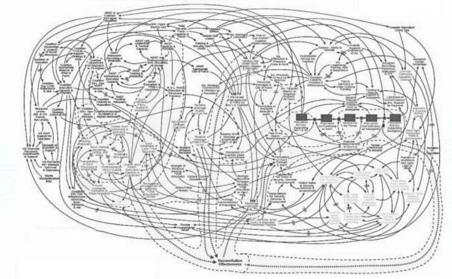

Outils du génie logiciel
Niveau 1
Programme
- Historique
- Logiciel
- Architectures applicatives
- Architecures d'intégration
Le Module
- Bases du génie logiciel
- GIT
- Bases du Développement Web
- Un projet annuel
- Fonder une base solide
Historique du génie logiciel
Les années 50
- Langages de haut niveau (FORTRAN, COBOL,...)
- Mort annoncée de l'assembleur
- Euphorie & Optimisme
- Programmation automatique
Code Assembleur

Les années 60
- Adoption en masse de l'informatique
- Gestion des entreprises
- Procédés industriels
- Chimie
- Productique
- Systèmes embarqués
- Spatial
- Nucléaire
- Communication
La crise du logiciel
- Pas de maîtrise des grands projets
- Dépassement budget et delais facteur 4
- Problèmes de communication dans les équipes
- Logiciel produit non conforme
C'est la crise!!

Naissance du génie logiciel
- Conférence de l'Otan 1968 à Garmisch
- Les difficultés de la production de logiciel
- Intitulé: Working Conference on Software Engineering
- Conférence de l'Otan 1969 à Rome
- Pas de solution immédiate
- Naissance du génie logiciel
- Identification grandes lignes
- Définitions des objectifs
- Naissance outils et méthode
Pourquoi pas mettre plus de monde?
Neuf femmes ne font pas un enfant en un mois.😃
Frederick Brooks
Génie Logiciel
C'est quoi le génie logiciel?
Le génie logiciel s’attache à définir et à appliquer des méthodes, des outils et des pratiques propres à assurer la production de logiciel répondant à des besoins spécifiés et respectant certains critères de qualité eux-mêmes spécifiés, ainsi que des contraintes économiques.
Qualité logiciel
- Une des raisons à l'origne du génie logiciel
- Une appréciation basée sur des indicateurs
- Dépend:
- Entièrement de sa construction
- Processus utilisés pour son développement
Indicateurs de qualité (ISO ISO/IEC 25010:2011)
- Capacité fonctionnelle
- Facilité d'utilisation
- Fiabilité
- Performance
- Maintenabilité
- Portabilité
Enjeux pour les organisations
- Investissement en millions
- Acquérir de nouveaux clients & marchés
- Réduire côuts de production
- Répondre très vite aux nouvelles demandes
- Time to market
- Plus agile
Enjeux pour les organisations (risques)
- Perte de chiffre d'affaire
- Arrêt d'activités
- Image écornée
- Mort d'hommes 😢
Quelques gros bugs dans l'histoire
- Le Blackout de Facebook (Octobre 2021)
- Cours Facebook plonge de 4.89%
- Perte de 6 Md$ 🤐
- Ariane 5 - 1995
- Bug informatique de la fusée ariane 5
- Explosion 36s après lancement
- 500 000 millions de dollars qui s’envolent en fumée 😳
- Toyota – 2009
- 200 à 400 morts et 2,3 milliards d’euros 😱
- La Lexus ES350 a tué nombre de ses propriétaires
- Enclenche l’accélération jusqu’à 150 km/h
- Désactive la pédale de frein
Quelques annecdotes personnelles
- Le bug Amazon à 1M€ AXA 🤑
- La fermeture d'une usine de production en Chine de Decathlon 🤔
Le cycle de vie d’un logiciel
Les étapes du cycle de vie
Méthode itérative (agile)
Architecture logicielle
Fred Brooks
Le facteur déterminant du succès ou de l’échec d’un projet est l’unité conceptuelle de son architecture
The Mythical Man-Month (Le mythe de l’homme-mois) - 1975
Principes d’architecture
- Comportement d'un système
- Répresentation abstraite
- Décomposition en sous système
- Comprehension système complexe (diviser pour mieux régner)
- Découper le travail
- Dev Frontend
- Dev Backend
- DBA
- ...
Catégories d'architecture
- Architecture applicative
- Architecture d'intégration
Architecture applicative
Flat structure (structure plate)
- Big ball of MUD
- Non structuré
- Rempli de dépendances cachées entre les parties
- Avec beaucoup de données
- Duplication de code
- Une identification peu claire des couches et des problèmes
- Code spaghetti
Big bull of mud/Code spaghetti

Régression!!!

Architecture multicouches
Notion de couche (layer)
- Faire un découpage logique
- Sous-sytèmes à part entière
- Isoler les responsablités
- Principe:
Separation of concern
- Casser le couplage
Presentation Layer (couche présentation)
- Comment l'information est presentée
- Expose un client graphique (GUI)
- Console: client SSH, Telnet,...
- Lourd: Outlook, Skype,...
- Léger: Gmail, Facebook
Business layer (couche business)
- Noyau de l'application
- Règles qui régissent processus métiers
- Change peu
- Agnostique à la technologie
- Exemples:
- Les règles de calculs
- Exécution de commandes
- La prise de décision logique
Data Layer (couche d'accès à la donnée)
- Interface de connexion aux sources de stockage
- Base de données
- Rélationnelle
- NoSQL
- Fichiers (txt, csv,...)
Schéma architecture multicouhes

Avantages de l'architecture multicouches
- Découplage
- Moins de risque de régréssion
- Lisibilité & compréhension
- Modularité
- Changé de fournisseur de BD
- Changé de technologies front
Pattern MVC
Qu'est-ce qu'un design pattern?
Les patrons de conception sont une boîte à outils permettant de résoudre des problèmes classiques de la conception de logiciels.refactoring.guru
Modèle Vue Controller(MVC) Pattern

Limites l'architecture multicouhes
- C'est une séparation logique
- Un seul environnement d'execution: MONOLITHE
- Gestion des accès multi-canaux (mobile, web)
Architecture n-tier
Notion de tiers
- Tier: Environnement d'exécution contenant une couche logique.
- Aller plus loin dans le découplage
- Deploiement physique par couche
- Garanti indépendance forte entre les couches logiques
Architecture 3-tier
- Emerge à partir des années 90
- Composé:
- Tier client (client lourd, léger)
- Middle-tier (logique métier)
- Serveur de base de données
Schéma Architecture 3-tier
Schéma Architecture 2-tier(exemple)
Qu'en est-il des accès multi-canaux?
Schéma 3-Tiers multi accès
Client lourd
- Logiciel destiné à être installé localement
- Possède un setup
- Skype, Outlook
- Difficultés
- Gestion des plateformes(linux, windows, mac,...)
- Les versions de système d'exploitation
- Les mises à jours
Client léger
- S'exécute dans un navigateur Web
- Exemple: Gmail, Facebook
- Navigateur:
- Implémentation standards des règles W3C
- Gère problèmes de compatibilité
Zoom sur le mobile
- Marché à fort potentiel
- Croissance exponentielle
- Quelques chiffres rapport digital 2021 de We are Social
&
Hootsuite
- Nombre d'utilisateurs: 5, 27Md
- 67% de la population mondiale
- 7h/jour sur le web 😲
- En Guinée
- MPTEN
- ~6M d'abonnés internet ~14M téléphonie
Développement mobile
- Des contraites drastiques:
- Résolution d'écran
- Bande passante
- Déploiement via les stores
- Deux choix d'architecture:
- Android - Google
- iOs - Apple
- Faire un choix
- développement coûteux
Modèles développement mobile
Développement natif
- On choisit son camp
- Décision dictée par le marché
- Android: Java/kotlin
- iOS: Objective C/swift
- Avantages:
- Performante
- Accès aux capeurs: GPS, Caméra, Gyroscope
- Meilleure ergonomie
- Fonctionne hors-ligne (offline)
- Inconvenient:côut
Les applications Web
- Comme une application un tier client classique
- Web (HTML5) CSS3, JAVASCRIPT
- Avantages:
- Légèreté
- Portabilité
- Moins coûteux
-
Inconvenients:
- Pas d'accès à certains capteurs (gyroscope,...)
- Accès limité au GPS
Développement Hybride
- Développer une application native
- Baser sur le WEB
- Utiliser outil de génération de code natif
- Un base code traduit en code natif (Adroid,iOS)
- Deux types de technologies:
- Webview
- Application cross-platform
Technologies Hybrides
Bases de l'architecture d'intégration
Notion d'API
- Application - Programming - Interface
- Faire dialoguer des applications
-
Acteurs:
- Producteur de service
- Consommateur de service
- Interface de programmation
- Accès services tiers
- Données/fonctionnalités
Mon service de location de Taxi
API REST
- Respecte les standards du web
- Architecture logicielle basée sur le HTTP
Notions HTTP
- Notion de ressource
- URI
- URL
- Les en-têtes
- Verbe HTTP:
- GET
- POST
- PUT/PATCH
- DELETE
Exemple d'API gestion de notes des étudiants
- Définit les resources:
- Etudiants => matricule
- Notes => cours
- URI:
- api/etudiants
- api/etudiants/1052478963
- api/etudiants/1052478963/notes
- api/etudiants/1052478963/cours/3/notes
- URL:
- https://univ-labe.edu.gn/api/etudiants
- https://univ-labe.edu.gn/api/etudiants/1052478963
Format d'échange(JSON)
- JSON(Javascript Object Notation)
- Léger
- Le plus utilisé
- Il existe aussi le XML
- Lourd et verbeux
Exemple de JSON
{
"id": 0
"nom": "Camara",
"prenom": "Aly",
"matricule": "1052478963",
"cours": "Génie logiciel",
"note": 8.5
}
Produire une description d'API
- Décrire API:
- Entrées attendues
- Sorties à générer
- Autorisations requises
- ...
- Constitue le contrat de service
- Peut-être définit avec OpenAPI
- Générer automatiquement
Architecture orientée service